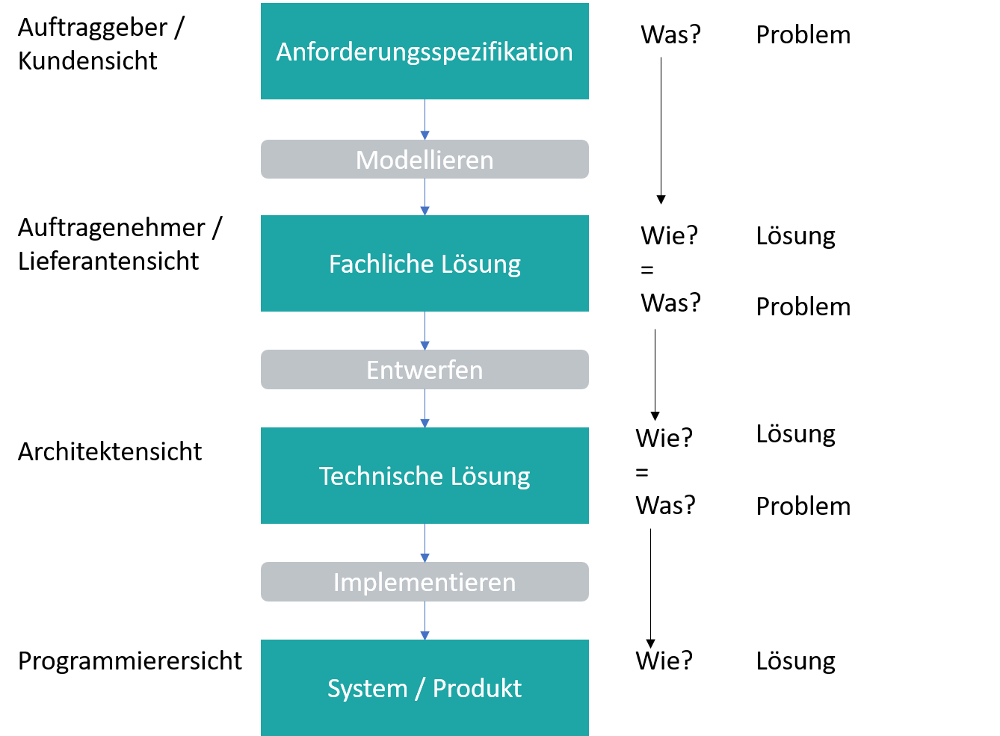

Spezifikation von Softwareprojekten
Marcel Lüthi Departement Mathematik und Informatik
Spezifikation
Was soll von einem System geleistet werden?
- Wird in verschiedenen Phasen für verschiedene Zwecke eingesetzt
- Nicht nur Anforderungen müssen spezifiziert werden
- "Vertrag" zwischen
- Entwickler und Benutzer
- Produzent / Konsument eines Service
Spezifikation
Zweck von Spezifikationen
- Benutzeranforderungen klären und festhalten
- Gemeinsamer Referenzpunkt für Benutzer/Entwickler
- Wichtig in Entwicklung und Wartung
- Klare Definition des Systems
- Sollte Mehrdeutigkeiten und Inkonsistenzen eliminieren
- Grundlage für Protoyping und Implementation
- Design muss Benutzeranforderungen erfüllen
- Code muss Designanforderungen erfüllen
Arten von Spezifikationen
Spezifikationen beschreiben:
- was der Benutzer erwartet (Lastenheft)
- die Funktionen die ein System zur Verfügung stellt (Pflichtenheft)
- das Design (Design/Architekturspezifikation)
- das externes Verhalten eines Moduls (Schnittstellenspezifikation)
- die interne Struktur eines Moduls
- (das Laufzeitverhalten / Performance)
Qualitätsanforderung an Spezifikation
- Präzise, Korrekt, Eindeutig
- Konsistent
- Vollständig
- Alle Anforderungen müssen dokumentiert sein
- Alle eingeführten Begriffe müssen wieder definiert werden
- Inkrementell
- Prozess: Von grob zu fein.
- Spezifikation kann auf verschiedenen Detailebenen verstanden werden.
Präzise Korrekt, Eindeutig
- Beispielspezifikation für eine Textverarbeitung
Markieren bezeichnet den Prozess Teile eines Dokuments zu selektieren. Viele Editierfunktionen werden in zwei Schritten durchgeführt:
1. Markieren des Texts
2. Anwenden der entsprechenden Funktion
- Ist es möglich unzusammenhängende Bereiche zu markieren?
Präzise Korrekt, Eindeutig
- Beispielspezifikation - Sicherheitskritische Anwendung
Jede Nachricht muss verdreifacht werden. Die Kopien müssen durch drei unterschiedliche physische Kanäle verschickt werden. Der Empfänger akzeptiert die Nachricht durch eine 2 zu 3 Mehrheitentscheidung.
- Muss der Empfänger auf alle Nachrichten warten?
Konsistenz
- Beispiel Textverarbeitung
The gesamte Text muss in Zeilen von gleicher Länge aufgeteilt werden. Die Länge wir durch den Benutzer spezifiziert. Wenn der Benutzer keine explizite Trennzeichen angibt, darf die Zeile nur am Wortende umgebrochen werden.
- Was passiert wenn ein Wort länger als eine Zeile ist?
Klassifikation von Spezifikationsmethoden
- Informell, Semiformal, Formal
- Konstruktiv
- Verhalten wird anhand einer "abstrakten Maschine" definiert
- Deskriptiv
- Verhalten wird anhand von Eigenschaften definiert
Beispiel 1: Konstruktive Spezifikation.
Spezifikation einer geometrischen Figur $E$.
- Bestimme zwei Punkte $P_1$ und $P_2$ einer Ebene
- Nimm eine Schnur und befestige die Enden an den Punkten $P_1, P_2$
- Nimm einen Bleistift und spanne damit die Schnur
- Fahre mit dem Bleistift im Gegenuhrzeigersinn.
- Schnur muss immer gespannt sein
Beispiel 1: Deskriptive Spezifikation
Spezifikation einer geometrischen Figur $E$.
- Die geometrische Figure $E$ wird durch die folgende Gleichung definiert
\[ \frac{x^2}{a^2} + \frac{y^2}{b^2} = c \] wobei $a, b, c > 0$ zu wählende Konstanten sind
Beispiel 2: Konstruktive Spezifikation
Sei $a$ eine Liste von $n$ Elementen. Das Resultat der Sortierung ist eine Liste $b$ von $n$ Elementen, so dass das erste Element von $b$ dem Minimum von $a$ entspricht (falls zwei Elemente denselben Wert haben kann jeder der Elemente gewählt werden ). Das zweite Element von $b$ ist das Minimum der Liste mit $n-1$ Elementen, die wir erhalten wenn wir das kleinste Element entfernen. Diese Prozedur wird wiederholt bis es keine Elemente mehr in Liste $a$ hat.Beispiel 2: Deskriptive Spezifikation
Das Resultat der Sortierung von einer Liste $a$ ist eine Liste $b$, die einer Permutation von $a$ entspricht und deren Elemente sortiert sind.Verifizieren von Spezifikationen
Korrektheit
Software ist korrekt, when sie die spezifizierten funktionalen Anforderungen erfüllt
- Garantiert jedoch nicht, dass die Software auch das tut was man will.
- Spezifikationen müssen verifiziert werden.
Möglichkeiten zur Verifikation von Spezifikationen
- Beobachten des dynamischen Verhaltens
- Simulation
- Prototypen

- Analysieren und ableiten von Eigenschaften
- Möglich nur bei formalen Spezifikationen
Unit Tests
- Inwiefern stellen Spezifikationen einen Referenzpunkt in der Entwicklung dar?
- An welchen Stellen im Entwicklungsprozess sind Spezifikationen sinnvoll?
- Was ist der Unterschied zwischen einer deskriptiven und einer konstruktiven Spezifikationsmethode
- Weshalb müssen Spezifikationen verifiziert werden?
- Was sind Möglichkeiten um Spezifikationen zu verifizieren?
Modelle und Methoden zur Spezifizierung
- Es existiert eine vielzahl von Methoden/Sprachen und Notationen
- Keine kann alle Anforderungen abdecken
- Verschiedene Methoden / Diagramme werden kombiniert
- Mehrere Sichten auf das Problem
- Ziel: maximale Klarheit und Verständlichkeit
- UML bietet umfangreiche Palette von Modellen und Diagrammen an